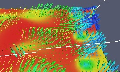
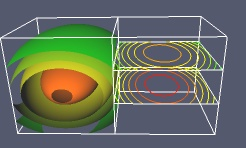
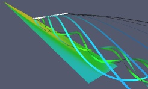
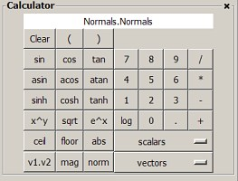
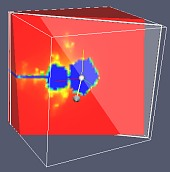
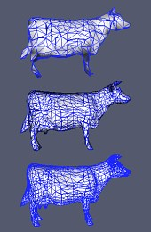

Features
The following summarizes the important features
of ParaView.
Visualization Capabilities:
- Handles structured (uniform, non-uniform rectilinear grids as
well as curvilinear grids), unstructured, polygonal and image data
|
- 
All processing operations (filters) produce datasets. This allows
the user to either process further or to save as a data file the
result of every operation. For example, the user can extract a
cut surface, reduce the number of points on this surface by
masking and apply glyphs (for example, vector arrows) to the
result.
|
- 
Contours and isosurfaces can be extracted from all data
types using scalars or vector components. The results can be
colored by any other variable or processed further. When possible,
structured data contours/isosurfaces are extracted with
fast and efficient algorithms which make use of the special
data layout.
|
- Vectors fields can be inspected by applying glyphs
(currently arrows -vector arrows-, cones and spheres)
to the points in a dataset. The glyphs can be scaled
by scalars, vector component or vector magnitude and can be
oriented using a vector field.
|
- A sub-region of a dataset can be extracted by cutting
or clipping with an arbitrary plane (all data types),
specifying a threshold criteria to exclude cells (all data
types) and/or specifying a VOI (volume of interest -
structured data types only)
|
- 
Streamlines can be generated using constant step or
adaptive integrators. The results
can be displayed as points, lines, tubes, ribbons etc. and
can be processed by a multitude of filters.
|
- The points in a dataset can be warped (displaced)
with scalars (given a user defined displacement vector) or
with vectors (unavailable for rectilinear grids).
|
- 
With the array calculator, new variables can be computed
using existing point or cell field arrays. A multitude of
scalar and vector operations are supported.
|
- Data can be probed on a point or along a line. The
results are displayed either graphically or as text and can
be exported for further analysis.
|
- ParaView provides many other data sources and filters by
default (edge extraction, surface extraction, reflection,
decimation, extrusion, smoothing...) and any
VTK filter
can be added by providing a simple XML description (VTK
provides hundreds of sources and filters, see VTK documentation
for a complete list).
|
Input/output and File Formats:
- Supports a variety of file formats including:
- VTK (new and legacy, all types including parallel, ascii and
binary, can read and written)
- EnSight 6 and EnSight Gold (all types including parallel,
ascii and binary; multiple parts are supported -each part
is loaded separately and can be processed individually)
(read only)
- Plot3D (ascii and binary, C or Fortran; support for
multiple blocks, I blanking is currently partially supported)
(read only)
- Various polygonal file formats including STL and BYU
(by default, read only, other VTK writers can be added
by writing XML description)
|
- Many other file formats are supported. See the documentation
for details.
|
- Since ParaView is open source, the user can easily provide
her own readers and writers.
|
User Interaction:
- Intuitive and flexible interface based on the
Tcl/Tk toolkit.
|
- Compact user interface design. All
tools are located in the main window. This eliminates
the need for large number of windows which are often
difficult to locate on a cluttered desktop.
|
- 
Allows changing the parameters of many
filters by directly interacting with the 3D view using
3D widgets (manipulators). For example, the
user can manipulate the seed line of a streamtrace filter
by clicking on a control point and dragging the line
to the new location.
|
- 
Maintains interactive frame rates even when working with
large data through the use of level-of-detail (LOD) models.
The user determines the threshold (number of points) beyond
which a reduced version of the model is displayed during
interaction (the size of the model can also be adjusted).
Once the interaction is over, the large model is rendered.
|
Large Data and Distributed computing:
- Runs parallel on distributed and shared memory systems
using MPI. These include workstation clusters, visualization
systems, large servers, supercomputers etc.
|
- The user interface can be run either on the root MPI node
or on a separate workstation using the client/server mode.
|
- ParaView uses the data parallel model in which the data
is broken into pieces to be processed by different
processes. Most of the visualization algorithms function
without any change when running in parallel. ParaView also
supports ghost levels used to produce
piece invariant results. Ghost levels are points/cells
shared between processes and are used by algorithms which require
neighborhood information.
|
- Supports both distributed rendering (where the results are
rendered on each node and composited later
using the depth buffer), local rendering (where the
resulting polygons are collected on one node and rendered locally)
and a combination of both (for example, the level-of-detail
models can be rendered locally whereas the full model is
rendered in a distributed manner). This provides scalable
rendering for large data without sacrificing performance
when working with smaller data.
|
- ParaView supports tiled displays throught built-in display
manager. Support for Sandia's Ice-T library is under development.
|
Scripting and extensibility:
- ParaView is fully scriptable using the simple but powerful
Tcl language. Every operation
has a corresponding script command. Every command executed
during a session can be saved in a trace file which can
be re-loaded to reproduce the session. Furthermore, since the
session file is simply a Tcl script, it can be edited/modified
and loaded to obtain different results.
|
- Additional modules can be added by either writing an XML
description of the interface (since the XML interface is
still being developed, it is not fully documented and is
subject to change) or by writing special C++ sub-classes
of the main ParaView module (this is only needed for advanced
modules). The XML interface allows users/developers to add
their own VTK filters to ParaView without writing any special
code and/or re-compiling (ParaView can load shared Tcl wrapper
libraries at run time).
|
- Since the user interface is written with
Tk, it can be modified and
extended at runtime either from the command prompt or by
loading a ParaView script. For example, it is possible to
write a demonstation script which brings up a message window
describing the current operation as well as allowing the
user to interrupt the demo.
|
|